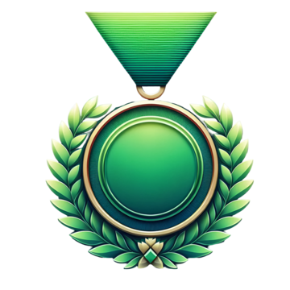

arsheen sultan barak
Keamari, Karachi, Pakistanarsheen.sultan.barak@gmail.com
Hi, I am Arsheen Sultan Barak ,I am language enthusiast and web developer, I am interested in creating unique designes and I love solving difficult problems.
Experience:
Teacher
T.C.F School
may-2020 to aug-2022
Worked as english and maths teacher in T.C.F .improved student's grades wioth unique teaching style.
Tutor
Educators
jan-2021 to march-2023
Taught english language to my students, organized debate and speech competitions to boost their confidence. Taught them improvisation.
Education:
Faculty of Science (FSc)
T.C.F College Qayyumabad
aug-2017 to may-2019
Pre-Engineering
Secondary School Certificate (SSC)
T.C.F School Nagina Campus
may-2015 to may 2017
Matric science
Skills:
Programming Languages and Tools
Workflow
Distinctive and visually appealing websites.
Cross browser testing and debugging.
Cross functional teams.
Agile development and scrum.
Interests:
Apart from being a web developer, I enjoy most of my time being outdoors. I like mountasins and serene places.
When indoors, I like reading Sci-fic and Mystery novels. my favourite writer is Conan Doyle author of Sherlock Holmes .
I also enjoy learning different languages . Currently I am interested in learning japanese and I have already attain N5 level proficiency.
Awards and Certifications:
First Position in English Intermidiat.
Third Position in English Pre-Intermidiate.
Twice a Debate Competition Winner.
Culinary arts Certificate(400hrs).
First response firp Certificate.